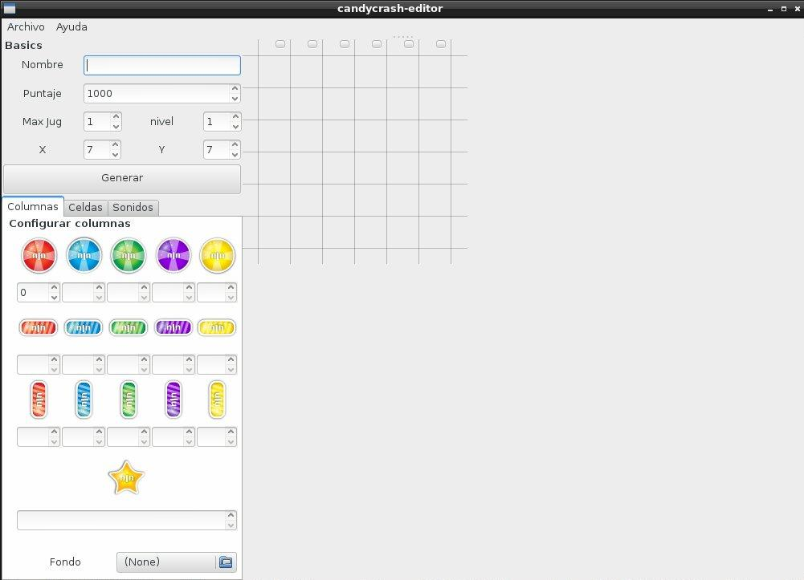

Grupo 8
Grupo 8
Grupo 8
Grupo 8
 Contenidos
Contenidos
El programa tendria que ser corrido en cualquier distribución de Linux sin problemas. Especialmente fue probado en:
Dependiendo de la distribución los paquetes necesarios para correr son: Comunes a todas las distribuciones:
Aunque el paquete se llame 'Gtkmm 3.0', no quiere decir que es la versión '3.0' del paquete gtkmm, sino que el mismo paquete se llama 'gtkmm-3.0'. La despendencias son la versión '3.8' del mismo. Lo mismo para 'Gtkmm-2.4', se requiere la versió '2.6' del mismo.
Para instalar las dependecias, se debe abrir una consola o terminal. Dependiendo del entorno gráfico utilizado, esta se podrá abrir desde el meú, subsección "Accesesorios", "Terminal". A continuación se deber&aaute;n escribir los siguientes comandos:
$ sudo yum install alsa-lib-devel gtkmm30-devel.i686 gtkmm30.i686 jsoncpp-devel.i686 jsoncpp.i686
[sudo] password for xxxxxx:
Se supuso la arquitectura i686, de poseer un sistema operativo de 64 bits, utilizar los paquetes de gtkmm con la terminación x86_64. Para mayor información acerca de como utilizar el comando yum ver la documentación de fedora: http://docs.fedoraproject.org/es-ES/Fedora/14/html/Software_Management_Guide/ch05s05.html#id3183918.
Donde dice xxxxxx es el nombre de nuestro usuario. Ahí se solicitará nuestra contraseña. Recordar que el usuario debe estar en el grupo sudoers, es decir, debe poder realizar tareas de administrador. De no poder ser asi, por favor, contactar con el administrador del sistema y pedirle que instale los paquetes aqui mencionados
Ubuntu / Peppermint / Debian:Para instalar las dependecias, se debe abrir una consola o terminal. Dependiendo del entorno gráfico utilizado, esta se podrá abrir desde el meú, subsección "Accesesorios", "Terminal". A continuación se deber&aaute;n escribir los siguientes comandos:
$ sudo apt-get install libasound2 libasound2-dev libgtkmm-3.0-1 libgtkmm-3.0-dev libgtkmm-2.4-1c2a libgtkmm-2.4-dev libjsoncpp0 libjsoncpp-dev
[sudo] password for xxxxxx:
Donde dice xxxxxx es el nombre de nuestro usuario. Ahí se solicitará nuestra contraseña. Recordar que el usuario debe estar en el grupo sudoers, es decir, debe poder realizar tareas de administrador. De no poder ser asi, por favor, contactar con el administrador del sistema y pedirle que instale los paquetes aqui mencionados
Para mayor información acerca de como usar el comando 'apt-get' ver: https://help.ubuntu.com/community/AptGet/Howto
En sistemas Ubuntu o derivados es posible que se nececite agregar el ppa de GNOME 3 Team para satisfacer las depedencias. Para más información acerca de como hacer esto, ver: https://launchpad.net/~gnome3-team/+archive/gnome3#ppa-install
Para instalar las dependecias, se debe abrir una consola o terminal. Dependiendo del entorno gráfico utilizado, esta se podrá abrir desde el meú, subsección "Accesesorios", "Terminal". A continuación se deber&aaute;n escribir los siguientes comandos:
$ sudo pacman -Sy extra/alsa-lib extra/gtkmm3 extra/gtkmm extra/gtkmm extra/jsoncpp
[sudo] password for xxxxxx:
Donde dice xxxxxx es el nombre de nuestro usuario. Ahí se solicitará nuestra contraseña. Recordar que el usuario debe estar en el grupo sudoers, es decir, debe poder realizar tareas de administrador. De no poder ser asi, por favor, contactar con el administrador del sistema y pedirle que instale los paquetes aqui mencionados
InstalaciónEl paquete fue construido con las herraminetas autotools de gnu. Actualmente, no hay paquetes especíificos para cada distribución, se debe realizar la instalación manual desde consola. El paquete trae tanto el servidor, cliente y editor de mapas. Si uno lo único que desea hacer es conectarse a un servidor para jugar, ignore el servidor y editor.
Pasos a realizar:
$ cd /home/usuario/Downloads
$ tar xfv candycrash-1.0.tar.gz
$ cd candycrash-1.0
$ ./configure --prefix=/usr
$ make
$ sudo make install
El comando './configure' dará mensajes de error de no contar con las depencias necesarias para la instación.
El juego guarda todos los archivos necesarios en $PREFIX/share/candycrash/, donde $PREFIX es el directorio de instalación elegido.
El cliente no posee archivos de configuración. La única configuración posible es la elección de ip del servidor y puerto. Esto se configura atraves de la pantalla de login (La descripción de dicha pantalla se desarrolla posteriormente).
En lo que respecta al servidor, este utiliza un archivo con la información de los usuarios llamado userdata.json, este esta ubicado en la ruta dicha anteriormente. Es muy importante que el servidor se ejecute con un usuario que tenga permisos para escribir en esa carpeta y pueda editar el archivo. De lo contrario, el comportamiento del servidor será indeterminado.
Además, habrá una subcarpeta llamada Mapas que contendrá toda la informació acerca de los mapas.
Durante la instalación se eligio la carpeta destino, para ejecutar el cliente, se debe ir hasta la carpeta donde se instaló, subcarpeta "bin", y ejecutar el binario 'candycrash-cliente'. Esto se puede realizar desde una terminal (utilizando el comando cd para ir cambiando de directorio), o desde el manejador de archivos de nuestra preferencia.
Al abrir el juego Ud se encontrara con la siguiente imagen:

Para jugar Ud debe tener tener una cuenta. Si ya esta registrado coloque el ip:puerto al que quiera conectarse en el casillero Ip:Puerto .
Por ejemplo 127.0.0.1:9000
Luego coloque su nombre de usuario y su contrasena en los campos Usuario y Password respectivamente.
Luego presione Conectar
Si ud no tiene una cuenta, ingrese el nombre de usuario deseado y luego la contrasena que usara para conectarse cada vez que entre al juego en los campos Usuario y Password respectivamente, luego presione Registrar .
Una vez pasada la ventana de conexion Ud se encontrara con la siguiente imagen:

Aquí Ud puede:
Procediendo de la siguiente manera :

Una vez conectado a una partida Ud es redirigido a una sala con el siguiente formato :

En esta instancia Ud ya esta conectado y esperando que empiece la partida. Aquí puede chatear con los demas jugadores conectado a esta misma partida, en ningún caso Ud podrá ver la identidad de quién escribe. Sólo el creador de la partida puede dar comienzo a la misma mediante el boton de Empezar el juego .
En caso de querer abandonar la partida presione Salir de la partida .
Aclaración: Si el creador de la partida abandona la partida, cualquiera de los jugadores puede dar comienzo.
Finalmente, cuando el creador de la partida empieza el juego, a todos los jugadores conectados a la partida se les muestra el tablero listo para jugar.

El objetivo principal del juego es lograr ciertos patrones de colores y tipos de productos en celdas adyacentes. Dichas configuraciones se consiguen mediante el intercambio de los productos contenidos en celdas consecutivas. Los intercambios ocurren siempre de a pares de celdas donde el producto de la primera pasa a la segunda celda y viceversa. Las configuraciones o patrones están asociadas con ciertos puntajes y consecuencias
La GoldenStar sólo se activará mediante una acción directa del jugador, intentando intercambiarlo con un producto adyacente. El resultado de esta acción dependerá de cual sea este producto:
En todos estos casos se darán 40 puntos por cada uno de los productos eliminados. La eliminación de productos dejará celdas vacías en el tablero, que serán llenadas mediante la caída de los productos presentes en las celdas superiores. Las celdas situadas “arriba del borde superior” se considerarán rellenas con productos aleatorios (sin considerar si estas combinaciones son estables o no). En caso de producirse una nueva configuración especial, el puntaje que corresponda será multiplicado por dos. El proceso se repite hasta que se llegue a una configuración estable y, mientras este proceso se repita, los jugadores no podrán realizar acciones.
El juego terminará cuando no haya más acciones posibles (todos pierden) o cuando uno de los jugadores llegue al puntaje especificado (ese jugador pasará de nivel y los otros tendrán que reintentarlo).
Procediendo como con el cliente, ejecute candycrash-server [puerto] donde se recomienda que [puerto] sea un numero mayor a 5000. Ejemplo : ./candycrasg-server 9000 . Esta aplicación es una aplicación de consola y soporta conexiones multijugador
Dependiendo de donde se instaló el servidor se puede llegar a nececitar permisos de administrador para correrlo. En el ejemplo de instalación se eligio la carpeta /usr, entonces el archivo de usuarios estará en /usr/share/candycrash/userdata.json, el usuario que ejecute el servidor debe tener permisos para crear archivos en ese directorio y para poder editar ese archivo. De no tenerlos, el comportamiento de la aplicación es indeterminado.
De la misma forma, para ejecutar el Editor: candycrash-editor lo llevará a la aplicación que se muestra a continuación:
Para crear un nivel satisfactoriamente Ud deberia seguir los siguientes pasos:
Para elegir las probabilidades Ud puede hacerlo mediante columnas o seleccionando cada celda en particular y eligiendo valores para cualquiera de los 16 caramelos, la probabilidad insertada para cada celda solo sera para una configuracion inicial dado que el regimen de aparicion durante el juego sera a traves de la probabilidad indicada para cada columna.
Ud puede elegir una imagen de fondo para el tablero, bajo la pestana Columnas en el selector de archivos indicado por Fondo . Tambien puede elegir una imagen de fondo para cada celda, o si quiere , un hueco para esa celda. Para eso tiene que presionar bajo la pestana Celdas el selector de archivo o el boton Hueco respectivamente.
También puede hacer selección del sonido que se ejecutará cuando se haga un cambio de pieza o cuando haya destrucción de piezas existentes. Para esto busque bajo la pestaña Sonidos y seleccione un sonido.
Aclaración:
Las probabilidades se computaran como numeros y no como porcentajes. Por ejemplo teniendo 13 para el boton rojo, 13 para un bar horizontal verde y 13 para un bar vertical amarillo significa que ambos van a tener la misma probabilidad de aparecer.
Los archivos de imagenes o sonidos que se fueran a utilizar deben ser seleccionados de la carpeta que se abre por defecto cuando uno presiona el boton. Cambiar de carpeta y usar otros archivos inhabilita la portabilidad.